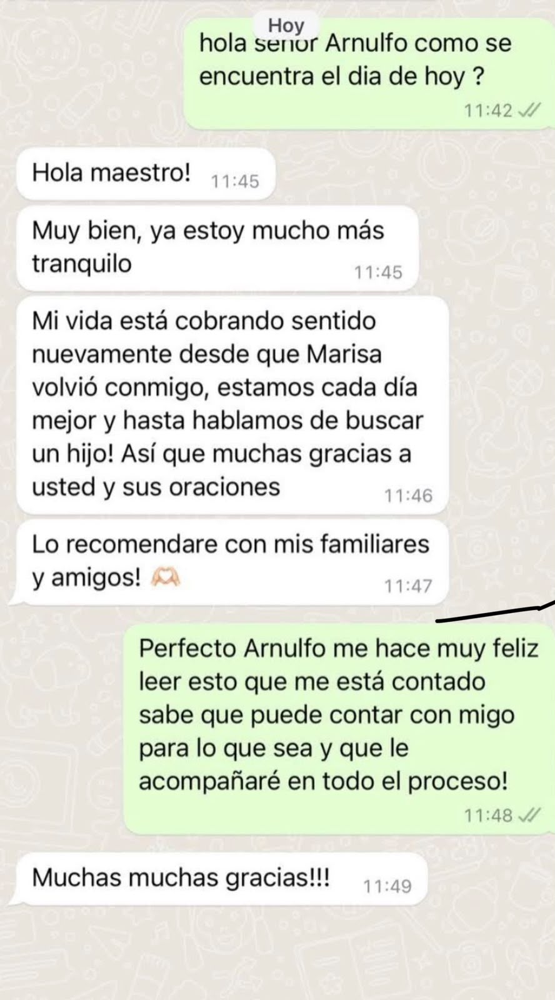
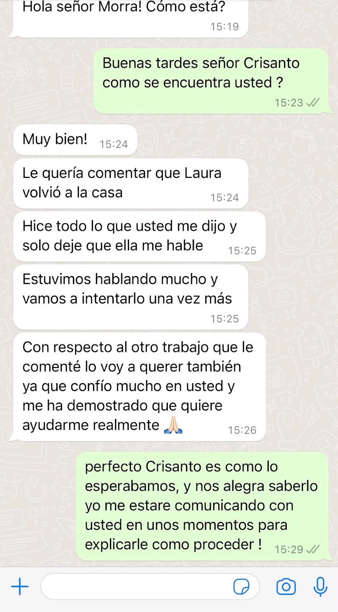
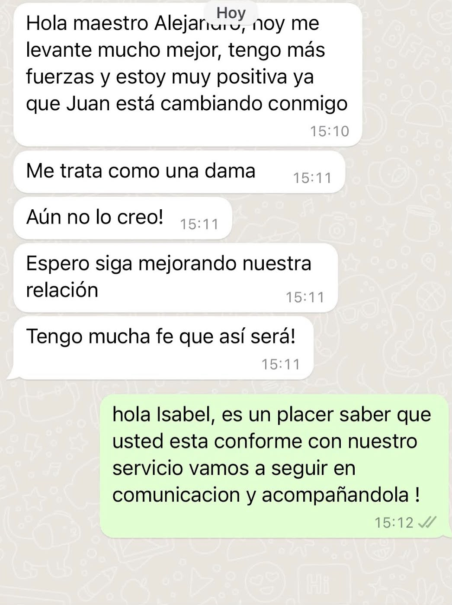
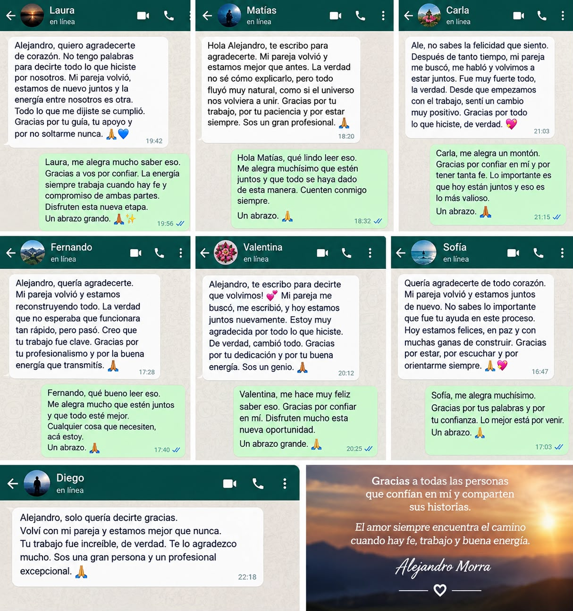

Retornos de Pareja y Reconciliación
Evaluamos tu situación para ayudarte a sanar distanciamientos, reconstruir la comunicación y trabajar en el regreso de tu pareja.
Orientación y consulta espiritual personalizada para ayudarte a recuperar la armonía, superar distanciamientos y fortalecer el vínculo con tu pareja.
🔒 Consulta 100% Confidencial y Privada
Evaluamos tu situación para ayudarte a sanar distanciamientos, reconstruir la comunicación y trabajar en el regreso de tu pareja.
Rituales y trabajos enfocados en revitalizar la atracción, proteger la relación frente a interferencias y consolidar la unión
Trabajos de endulzamiento para suavizar asperezas, calmar tensiones y recuperar el afecto y la ternura en la convivencia
Te comunicas directamente por WhatsApp para exponernos tu caso de manera totalmente confidencial.
Analizamos las energías y la situación para determinar el trabajo o ritual más adecuado.
Te acompañamos durante todo el proceso, brindándote orientación constante hasta completar el servicio.
Mensajes reales de personas que confiaron en nuestra guía espiritual




Sí, todos los datos e historias compartidas en la consulta son estrictamente privados y manejados bajo total confidencialidad
Solo debes hacer clic en cualquiera de los botones de WhatsApp y escribirnos directamente. Te responderemos a la brevedad